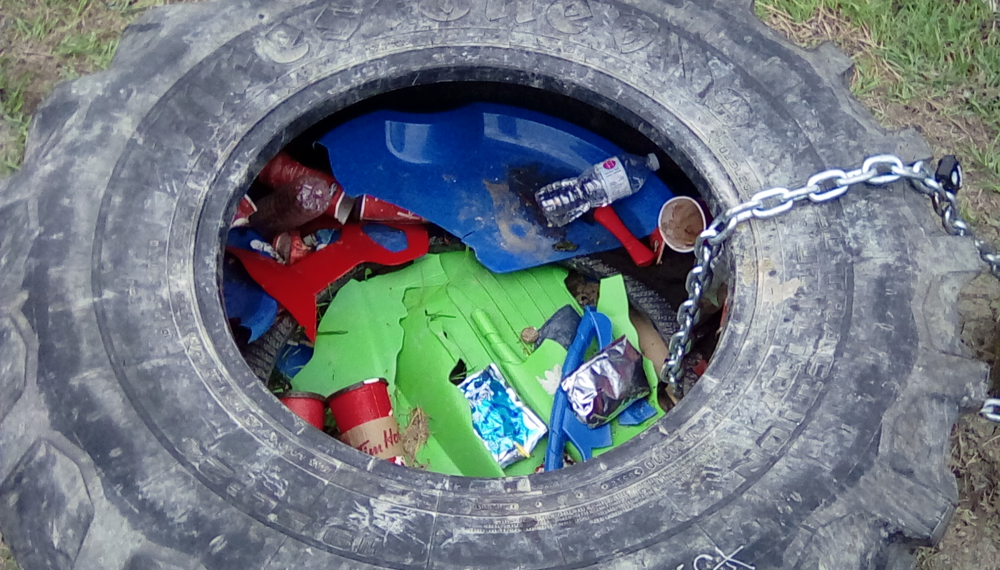
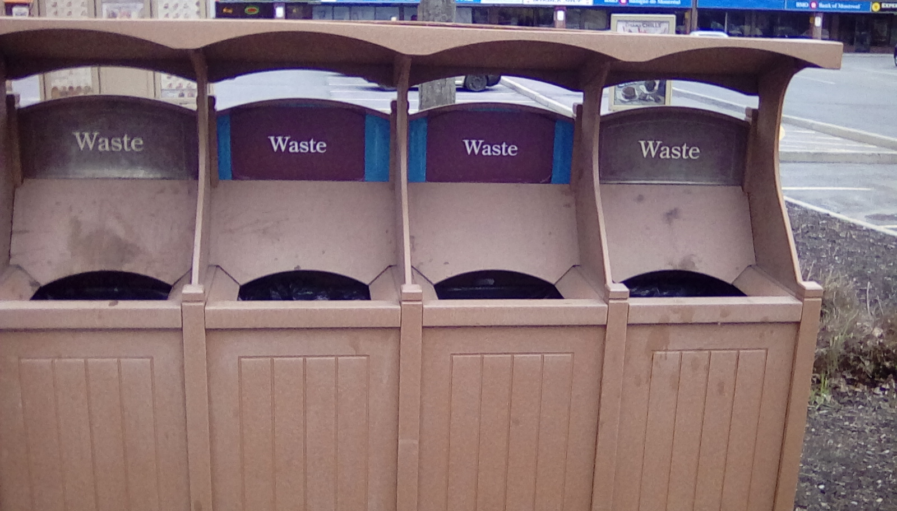
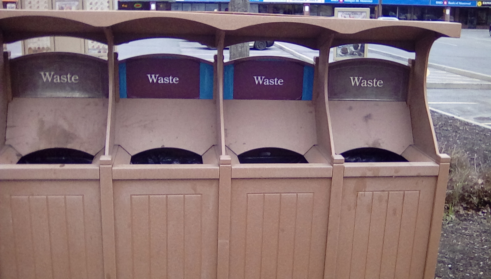

In Blackburn Hamlet there are not very many examples of sustainability. One of them would be the quantity of public trash cans. However, there are also a few locations where it could be extremely beneficial to place a trash that has remained can-less for years. An example of this could be on top of Green's Creek where broken sleds are scattered around, some even being placed in a tire that functions as a makeshift trash can.
 

Another example of sustainability in Blackburn is the community gardens. While not very big it is still a place for people to grow food if they wish to. Most people, including my family, decide to simply use their yards. While small, our garden is a fun project that if expanded on could cut our total emissions by a rather large margin.
An example of something that could be done better would be incentivising the investment of solar panels. The average solar panel will pay for itself after just ten years of energy production and they are getting cheaper by the year. If all of Blackburn where to invest in just one solar panel per house then it would generate approximately 143,622 kWh per month or enough to power 147 houses. Seeing as most people would want to put more than one solar panel on their house, this could easily save tens of thousands of dollars per month.
Blackburn Hamlet is made up of three low-density residential zones, a small low-density commercial zone, medium-density residential zones and a high-density residential zone. As you can see on this map, the commercial zone is located in the center of Blackburn and is surrounded by the four areas. The two Northern areas are large low density residential areas with parks and paths connecting the different roads for pedestrians. In the Southern areas there are mid-density areas, one social housing and the other relatively cheap townhouses. Along Innes Rd. there are also a few high density apartment buildings.
I think that the layout of Blackburn Hamlet is relativly good. It centralises the commercial area as well as the schools (aside from Glen O) and allows most people to easily walk into the central ‘town’ area. For me, living on Butternut Crt., it takes about 25-35 minutes to get down to the commercial area, get what I need and get back home. However, if Blackburn Hamlet were to expand I think that we should build up the central areas. This is because houses on the outskirts make it harder for people to walk to the center area and would therefore force people to drive more often. During the summer people often just walk down the the store when they need a few groceries like bread or milk but if they live to far away it just takes too much time. I also think that building up the central area would raise the land value which would help economic growth. It isn't possible to expand outwards since Blackburn is surrounded by the Greenbelt to the west, by Lafarge to the north and by Innes Rd. to the south.